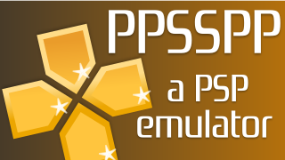

Siz emulyator haqida bilasizmi?
Emulyator bu keng tushuncha. Emulyatorning turlari juda ko'p va ular qulaylik tug'dirish uchun yaratilgan.

Emulyator asosan bir qurilma ochmaydigan o'yin, dastur va hokazolarni ochishda yordam beradigan ilova >(android) yoki dastur >(wimdows). Hammamiz "Play Station" nima ekanligini yaxshi bilamiz. Lekin bu qurilmani sotib olishga hammaning ham puli yetmaydi. Lekin biz undagi o'yinlarni o'ynagimiz keladi. Shunday holatlarda Emulyator bizga beqiyos yordam beradi. Ya'ni siz "Play Station" o'yinlarini o'z android telefoningizda o'ynashingiz mumkin. Emulyatorning turlari juda ko'p. Lekin eng ommaviylari - PPSSPP ("Play Station Portable" uchun), Dolphin Emulator ("Play Station 2" uchun), PS3 Emulator ("Play Station 3" uchun), J2 ME LOADER("java o'yinlar" uchun) va boshqalardir. Emulyatorlarning foydasi biz uchun juda katta. Lekin Play Station da o'naganga kelmaydi. Hechqisi yo'q Play Station olguncha androidda o'ynab turamiz :-)
@asosiy_android_sirlari kanali uchun maxsus tayyorlandi.